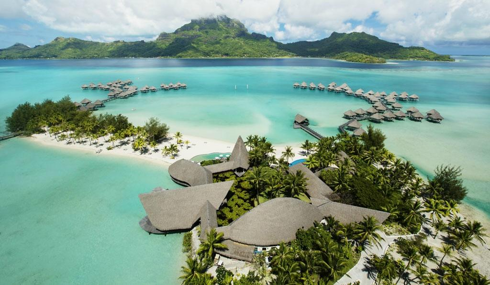

|
Bora-Bora (en tahitien : Pora Pora « première née ») est une des îles Sous-le-Vent de l'archipel de la Société en Polynésie française. Elle est située à 255 km à l'ouest-nord-ouest de la capitale Papeete. On appelle aussi l'île Mai te pora (« créée par les dieux »). Elle abrite l'aéroport de Bora-Bora. Bora-Bora se situe à 20,4 km à l'ouest-nord-ouest de Tahaa et à 51 km à l'est de Maupiti. À une distance de 252 km vers l'est-sud-est se trouvent les rivages de Tahiti. Cette île de l'archipel de la Société a des dimensions assez réduites : l'île principale ne mesure que 8 km du nord au sud et 5 km d'est en ouest ; la superficie totale de Bora-Bora, îlots compris, étant inférieure à 40 km²1. Le chef-lieu de l'île est Vaitape. L'atoll de Tupai est une dépendance administrative de Bora-Bora. |
|  |
Bora-Bora jouit d'un climat chaud tout au long de l'année avec des températures moyennes se situant entre 22 °C et 30 °C. La saison des pluies se situe entre novembre et avril avec une atmosphère lourde et quelques orages parfois violents qui donnent de fortes pluies. Ces pluies peuvent durer parfois plusieurs jours mais cela n'empêche pas de nombreux jours de soleil en cette pleine saison humide. Le taux d'humidité est souvent compris entre 75 % et 90 %, et atteint parfois 100 %. La saison sèche se situe entre avril et octobre avec un temps chaud et assez sec mais les alizés soufflent parfois fort. Les jours restent ensoleillés mais même si la saison sèche est présente, cela n'empêche pas l'apparition de quelques averses ou même orages en soirée. En période de saison sèche, le taux d'humidité moyen reste entre 45 et 60 %, mais il arrive que ce taux s'élève spontanément pour atteindre 80 %, surtout en soirée lorsque la chaleur du sol reste élevée et dépasse un certain seuil. On retrouvera ces orages de « saison sèche » en soirée. Bora-Bora compte 42 jours d'orage par an, plus de 4 mois de pluies par an, et 56 jours de vents secs |